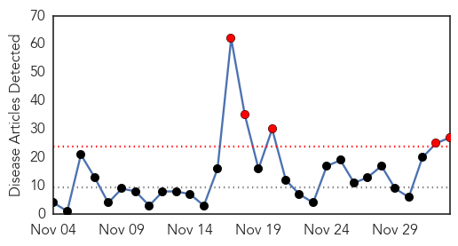
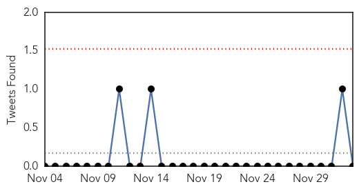
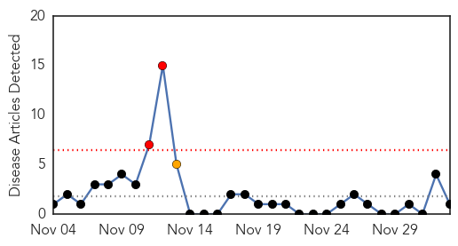
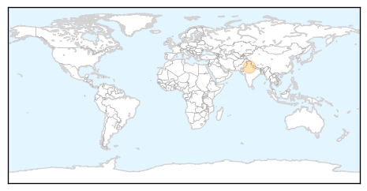

Influenza
30-Day Web Trend
5 alerts, 0 warnings

30-Day Twitter Trend
0 alerts, 0 warnings

Article Locations

Article Confidences

Top Articles:
- 1.000
- CDC says flu shots may not be good match for 2014-15 virus
- 0.998
- Number of Flu Cases Increasing in Kentucky
- 0.997
- CDC: Dominance of H3N2 viruses may portend more deaths this flu season
- 0.997
- Latest strain of equine flu poses serious problems
- 0.991
- Get flu shots now, health experts warn public
- 0.989
- Animal health body calls for more spending on disease detection
- 0.980
- World Health Group Calls More Spending on Disease Detection in Animals
- 0.964
- Healthy birds to be euthanized as avian flu probe continues
- 0.954
- Baxter County flu shot clinic set for Friday
- 0.947
- Flu complications risky for preemies
- 0.937
- European agency clears Novartis vaccine in Italy scare
- 0.936
- Avian flu outbreak hits two British Columbia farms (Update)
- 0.935
- Avian flu quarantine expands as Hong Kong bans some B.C. poultry
- 0.904
- Avian flu quarantine expands to 4 Fraser Valley farms
- 0.897
- FOX 8 WVUE New Orleans News, Weather, Sports, Social
- 0.879
- New bird flu case in Netherlands
- 0.841
- Four B.C. poultry farms quarantined for avian flu
- 0.831
- Health Officials: Get your influenza shot
- 0.819
- Avian flu outbreak hits 2 British Columbia farms
- 0.763
- Asian markets restrict Canadian poultry after bird flu outbreak - Business News
- 0.746
- Asian markets restrict Canadian poultry after bird flu outbreak
- 0.745
- Two more farms in B.C. under quarantine as officials try to contain avian flu
- 0.739
- Saudi- MoH allays vaccine fears says influenza shots 'perfectly safe'
- 0.686
- High alert on bird flu
- 0.632
- 'No evidence' Fluad flu vaccine caused deaths in Italy
- 0.601
- MoH allays vaccine fears, says influenza shots 'perfectly safe'Healthcare
- 0.579
- No winter blues in Dubai, just the sniffles
Top Tweets:
-
No tweets found for Dec 03, 2014
Hepatitis
30-Day Web Trend
2 alerts, 1 warnings

30-Day Twitter Trend
0 alerts, 0 warnings
Article Locations
Article Confidences

Top Articles:
Top Tweets:
-
No tweets found for Dec 03, 2014